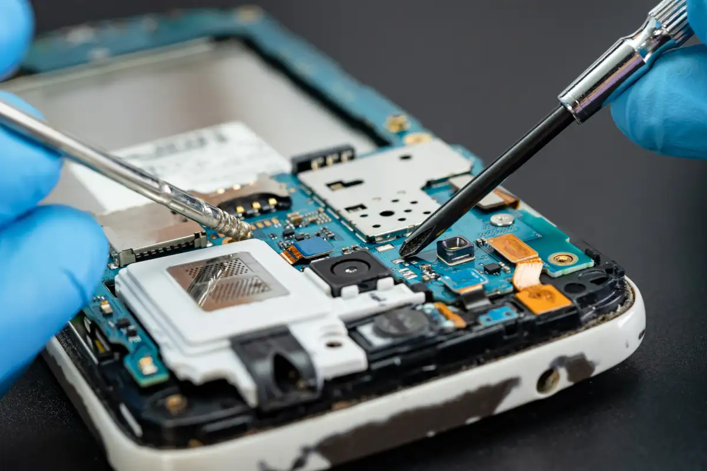
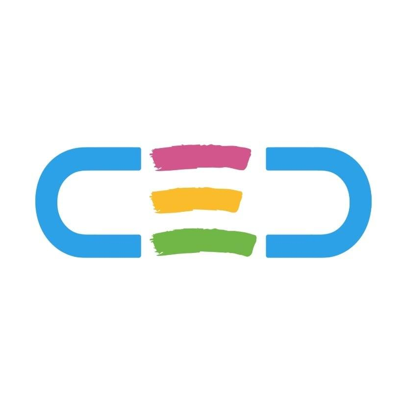

Profesor particular
De matemáticas, física y electrónica para todos los niveles. En casa y a domicilio
Febrero 2010 — presente (12 años)

Ayudante de cátedra
Cátedra de Electrónica I de la Facultad de Ciencias Exactas y Tecnología, U.N.T.
Septiembre 2017 — Agosto 2018 (1 año)

Servicio ténico
Reparación de celulares, tablets y computadoras en casa.
Julio 2019 — presente (3 años)

Pasante educador
Coordinación de Educación Digital en área de robótica.
Marzo 2021 — presente (1 año)